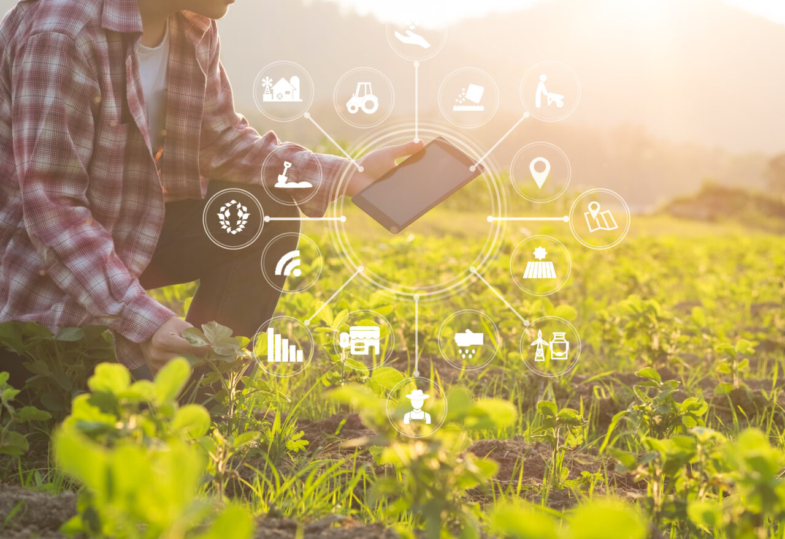

O crescimento da agricultura exigia que extensas áreas naturais fossem convertidas em lavouras e pastagens. A atividade era baseada na monocultura, mão de obra escrava e grandes latifúndios. No passado, o surgimento de ferramentas, como enxadas, lâminas, lanças e machados, e a seleção de sementes de plantas que poderiam ser cultivadas, teve grande impacto para a subsistência das pessoas e das comunidades.
É um conjunto de práticas inovadoras que resultam em maior produção rural, é aquela em que o sucesso do processo depende do uso de tecnologia, acesso a recursos, gestão, investimento, características do mercado e apoio a nível governamental. Além disso, a agricultura moderna visa melhorar o desenvolvimento de plantas cultivadas, reduzindo o uso de recursos naturais. A tecnologia na agricultura possibilita a integração de diferentes sistemas e equipamentos, promovendo uma maior conectividade entre as máquinas, sensores e dispositivos. Isso permite o compartilhamento de informações em tempo real, facilitando a gestão e o controle das operações agrícolas. Hoje os agricultores planejam sua produção com o apoio de sementes tratadas e melhoradas geneticamente. Além disso, empregam equipamentos para operações no campo e instrumentos que monitoram o desenvolvimento das plantas. Portanto, tudo muito diferente do que se empregava há séculos.
